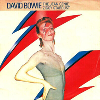
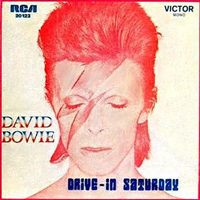
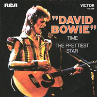
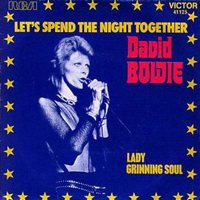

Not only one of the best album covers of the 70s, the Aladdin Sane artwork is arguably the most recognisable image in rock history - and, at the time, was the most expensive album cover ever made, thanks to Bowie's then manager, Tony Defries, insisting on a seven-colour printing technique (instead of the standard four-colour technique). The lightning-bolt that ran down Bowie's face reflected his own fractured psyche (the "lad insane" of the punning title) in the wake of his post-Ziggy Stardust fame, while the red mullet and ghoulish tint would define the Ziggy character in the world's collective consciousness. The photo was selected from a number of portraits taken by Brian Duffy, who came up with the lightning-bolt motif: "Bowie was interested in the Elvis ring, which had the letters TCB ["taking care of business"] as well as a lightning flash," Duffy recalled. " drew on his face the design... and used lipstick to fill in the red." It then took Bowie's make-up artist Pierre Laroche an hour to apply the finished look. "Several years ago, I started calling it the Mona Lisa of pop" Chris Duffy, son of Brian, told AnOther magazine in 2015. Aged 17 when his father took the photo that tops this list of David Bowie album covers, Chris witnessed some of the Aladdin Sane recording sessions first hand. "It has become a cultural icon... there isn't really an image that is as ubiquitous."
Photographer: Brian Duffy | Designer: Philip Castle
WATCH THAT MAN
Shakey threw a party that lasted all night
Everybody drank a lot of something nice
There was an old fashioned band of married men
Looking up to me for encouragement - it was so-so
The ladies looked bad but the music was sad
No one took their eyes off Lorraine
She shimmied and she strolled like a Chicago moll
Her feathers looked better and better - it was so-so
Yeah! It was time to unfreeze
When the Reverend Alabaster danced on his knees
Slam! So it wasn't a game
Cracking all the mirrors in shame
Watch that man!
Oh honey, watch that man
He talks like a jerk but he could eat you with a fork and spoon
Watch that man!
Oh honey, watch that man
He walks like a jerk but he's only taking care of the room
Must be in tune
A Benny Goodman fan painted holes in his hands
So Shakey hung him up to dry
The pundits were joking, the manholes were smoking
And every bottle battled with the reason why
The girl on the phone wouldn't leave me alone
A throw back from someone's LP
A lemon in a bag played the Tiger Rag
And the bodies on the screen stopped bleeding
Yeah! I was shaking like a leaf
For I couldn't understand the conversation
Yeah! I ran to the street
Looking for information
Watch that man!
Oh honey, watch that man
He talks like a jerk but he could eat you with a fork and spoon
Watch that man!
Oh honey, watch that man
He walks like a jerk but he's only taking care of the room
Must be in tune
Watch that man
Watch that man
Watch that man
Watch that man
ALADDIN SANE (1913-1938-197?)
Watching him dash away
Swinging an old bouquet (dead roses)
Sake and strange divine
Uh-huh-huh-uh, huh-uh (you'll make it)
Passionate bright young things
Takes him away to war (don't fake it)
Saddening glissando strings
Uh-huh-huh-uh, huh-uh (you'll make it)
Who will love Aladdin Sane?
Battle cries and champagne
Just in time for sunrise
Who will love Aladdin Sane?
Motor sensational
Paris or maybe hell (I'm waiting)
Clutches of sad remains
Waits for Aladdin Sane (you'll make it)
Who will love Aladdin Sane?
Millions weep a fountain
Just in case of sunrise
Who will love Aladdin Sane?
Will love Aladdin Sane
Love Aladdin Sane
Who will love Aladdin Sane?
Millions weep a fountain
Just in case of sunrise
Who will love Aladdin Sane?
Will love Aladdin Sane
Will love Aladdin Sane
They say the lights are oh so bright on Broadway
DRIVE-IN SATURDAY
Let me put my arms around your head (do-doo-ah)
Gee, it's hot, let's go to bed
Don't forget to turn on the light
Don't laugh, Babe, it'll be alright (do-doo-ah)
Pour me out another phone (do-doo-ah)
I'll ring and see if your friends are home
Perhaps the strange ones in the dome
Can lend us a book, we can read up alone
And try to get it on like once before
When people stared in Jagger's eyes and scored
Like the video films we saw
His name was always Buddy
And he'd shrug and ask to stay
She'd sigh like Twig the Wonder Kid
And turn her face away
She's uncertain if she likes him
But she knows she really loves him
It's a crash course for the ravers
It's a drive-in Saturday
Jung the foreman prayed at work (do-doo-ah)
That neither hands nor limbs would burst
It's hard enough to keep formation
Amid this fall out saturation (do-doo-ah)
Cursing at the Astronette (do-doo-ah)
Who stands in steel by his cabinet
He's crashing out with Sylvian
The bureau Supply for aging men
With snorting head he gazes to the shore
Where once had raged the sea that raged no more
Like the video films we saw
[CHORUS x2]
His name was always Buddy (do-doo-ah)
And he'd shrug and ask to stay
And she'd sigh like Twig the Wonder Kid (do-doo-ah)
And turn her face away
She's uncertain if she likes him (do-doo-ah)
But she knows she really loves him
It's a crash course for the ravers (do-doo-ah)
It's a drive-in Saturday, yeah
Drive-in Saturday
It's a drive-in Saturday
It's a drive-in Saturday
It's a drive-in Saturday
It's a drive-in Saturday
It's a drive-in Saturday
PANIC IN DETROIT
He looked a lot like Che Guevara
Drove a diesel van
Kept his gun in quiet seclusion
Such a humble man
The only survivor of the National People's Gang
Panic in Detroit, I asked for an autograph
He wanted to stay home, I wish someone would phone
Panic in Detroit
He laughed at accidental sirens
That broke the evening gloom
The police had warned of repercussions
They followed none too soon
A trickle of strangers were all that were left alive
Panic in Detroit, I asked for an autograph
He wanted to stay home, I wish someone would phone
Panic in Detroit
Putting on some clothes I made my way to school
I found my teacher crouching in his overalls
I screamed and ran to smash my favorite slot machine
And jumped the silent cars that slept at traffic lights
Having scored a trillion dollars
Made a run back home
Found him slumped across the table
A gun and me alone
I ran to the window. Looked for a plane or two
Panic in Detroit. He'd left me an autograph
"Let me collect dust." I wish someone would phone
Panic in Detroit
Panic in Detroit
Panic in Detroit
CRACKED ACTOR
I've come on a few years from my Hollywood Highs
The best of the last, the cleanest star they ever had
I'm stiff on my legend, the films that I made
Forget that I'm fifty 'cause you just got paid
Crack, baby, crack, show me you're real
Smack, baby, smack, is that all that you feel
Suck, baby, suck, give me your head
Before you start professing that you're knocking me dead
Oh, stay
Please stay
Please stay
You caught yourself a trick down on Sunset and Vine
But since he pinned you, baby, you're a porcupine
You sold me illusions for a sack full of cheques
You've made a bad connection 'cause I just want your sex
Crack, baby, crack, show me you're real
Smack, baby, smack, is that all that you feel
Suck, baby, suck, give me your head
Before you start professing that you're knocking me dead
Oh yeah
Ooh, stay for a day
Ooh yeah
Don't you dare
Oh yeah, yeah, yeah, yeah
Woo!
Woo!
Oh yeah
TIME
Time - He's waiting in the wings
He speaks of senseless things
His script is you and me, Boy
Time - He flexes like a whore
Falls wanking to the floor
His trick is you and me, Boy
Time - In Quaaludes and red wine
Demanding Billy Dolls
And other friends of mine
Take your time
The sniper in the brain
Regurgitating drain
Incestuous and vain
And many other last names
Well, I look at my watch it says 9:25 and I think
"Oh God! I'm still alive."
We should be on by now
We should be on by now
You are not a victim
You just scream with boredom!
You are not evicting time
Chimes - Goddamn, you're looking old
You'll freeze and catch a cold
'Cause you've left your coat behind
Take your time
Breaking up is hard
But keeping dark is hateful
I had so many dreams
I had so many breakthroughs
But you, my love, were kind
But love has left you dreamless
The door to dreams was closed
Your park was real and dreamless
Perhaps you're smiling now
Smiling through this darkness
But all I have to give
Is guilt for dreaming
We should be on by now
We should be on by now
We should be on by now
We should be on by now
We should be on by now
La, la, la, la, la, la, yes, time!
THE PRETTIEST STAR
Cold fire, you've got everything but cold fire
You will be my rest and peace child
I moved up to take a place near you
So tired, it's the sky that makes you feel tried
It's a trick to make you see wide
It can all but break your heart in pieces
Staying back in your memory
Are the movies in the past
How you moved is all it takes
To sing a song of when I loved
The prettiest star
One day though it might as well be someday
You and I will rise up all the way
All because of what you are
The prettiest star
Staying back in your memory
Are the movies in the past
How you moved is all it takes
To sing a song of when I loved
The prettiest star
One day though it might as well be someday
You and I will rise up all the way
All because of what you are
The prettiest star
LET'S SPEND THE NIGHT TOGETHER
Well, don't you worry 'bout what's been on my mind
I'm in no hurry, I can take my time
I'm going red and my tongue's getting tired
Out of my head and my mouth's getting dry
I'm h-h-h-high
Let's spend the night together
Now I need you more than ever
Let's spend the night together now
I feel so strong that I can't disguise, oh my
Well, I just can't apologise, no
Don't hang me up but don't let me down
We could have fun just by grooving around
And around and around
Let's spend the night together
Now I need you more than ever
Let's spend the night together now
Oh, you know I'm smiling baby
You need some guiding baby
I'm just deciding baby
Let's spend the night together
Now I need you more than ever
Let's spend the night together now
This doesn't happen to me every day
No excuses I've got anyway, hey
I'll satisfy your every need
And I know you'll satisfy me, oh my-my-my, my-my
Let's spend the night together
Now I need you more than ever
Let's spend the night together
Now I need you more than ever
Let's spend the night together
Now I need you more than ever
Let's spend the night together
They said we were too young
Our kind of love was no fun
But our love comes from above
Do it!
Let's make love
Hoo!
Let's spend the night together
Now I need you more than ever
Let's spend the night together now!
THE JEAN GENIE
A small Jean Genie snuck off to the city
Strung out on lasers and slash back blazers
And ate all your razors while pulling the waiters
Talking 'bout Monroe and walking on Snow White
New York's a go-go and everything tastes nice
Poor little Greenie
Woo-hoo
(Get back one)
[CHORUS]
The Jean Genie lives on his back
The Jean Genie loves chimney stacks
(The Jean Genie) he's outrageous, he screams and he bawls
The Jean Genie, let yourself go, oh
Sits like a man, but he smiles like a reptile
She loves him, she loves him, but just for a short while
She'll scratch in the sand, won't let go his hand
He says he's a beautician and sells you nutrition
And keeps all your dead hair for making up underwear
Poor little Greenie
[CHORUS]
He's so simple minded, he can't drive his module
He bites on the neon and sleeps in the capsule
Loves to be loved
Loves to be loved
Woo-hoo
Woo-hoo
[CHORUS]
Go
Go
[CHORUS]
Go
Go, go
LADY GRINNING SOUL
She'll come, she'll go
She'll lay belief on you
Skin sweet with musky oil
The lady from another grinning soul
Cologne she'll wear
Silver and Americard
She'll drive a beetle car
And beat you down at cool Canasta
And when the clothes are strewn
Don't be afraid of the room
Touch the fullness of her breast
Feel the love of her caress
She will be your living end
She'll come, she'll go
She'll lay belief on you
But she won't stake her life on you
How can life become her point of view
And when the clothes are strewn
Don't be afraid of the room
Touch the fullness of her breast
Feel the love of her caress
She will be your living end
She will be your living end
She will be your living end
She will be your living end
She will be your living end
SINGLES



